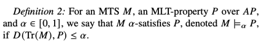
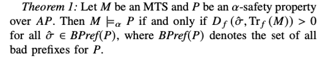
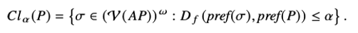
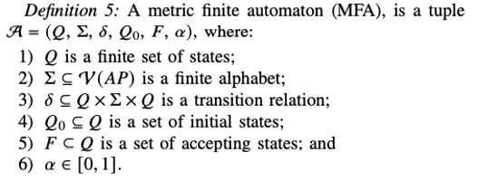
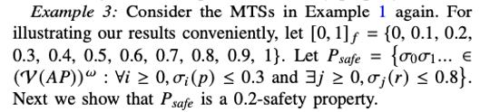
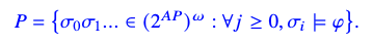
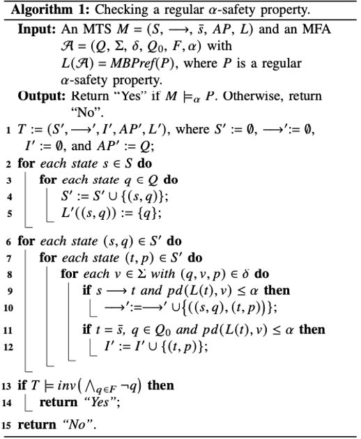

Approximate Safety Properties in Metric Transition Systems
Abstract
MTS是用于实时系统的定量验证。本文的工作点在于在MTSs进一步提升安全属性-验证在系统执行过程中没有不好的事发生。引入了一个距离临界值a在【0，1】，用来分析系统在多大程度上满足他的规约。然后提出了一个a-safety 属性，安全属性的定量扩展。然后通过闭包描述a-safety属性。给出了一个算法验证系统是否满足a-safety的属性Introduction
定量验证是学术界研究的一个重点。提出了MTSs的概念。MTSs的近似模拟。本文的目的是学习定量扩展和MTSs上安全属性的验证问题。
介绍了LT属性的发展历史。定量验证发展推动了安全属性扩展到概率和多值环境。
多值环境，基于海庭代数的LT属性验证问题。Li 介绍了概率TSs来处理失真信息。提出了概率TSs上的传统正则安全属性的验证方法。
Preliminaries
介绍了符号的定义，以及 pseudometric 的定义，原子命题的计算V。度量迁移系统MTS的定义M=(S,->,s,AP,L)。命题距离pd和路径距离td。Safety properties in MTSs
Linear Distances
Tdf表示有限路径的相似度tdMLT属性P的前缀：pref(P)。
Linear distance表示为d(p1,p2)= sup inf td(o1,o2)
线性距离不满足第二条度量属性
通过relaxing trace inclusion 引入近似满足概念：如果Tr(M)和P的线性距离在a上有界，那么MTS M近似满足MLT属性P

Approximate Safety Properties
在定量验证中，属性是安全或者非安全的。a-safety属性P表示所有路径与P有一定距离包含一个坏前缀。

0-safety 属性P是传统的安全属性
一个MTS M近似满足一个a-saferty 属性P ：Trf(M)不包含任何P的坏前缀

Clousre Operator
经典安全属性可以定义在LT属性的闭包上。当两个迁移系统M1和M2，所有M1的路径在M2中，路径包含成立。
Trace inclusion 提升到测量两个迁移系统的距离有多近
属性的闭包操作：

MTSs on PSEUDO-ULTRAMETRIC SPACES
经典属性：闭包的闭包等于闭包，经典满足关系是传递的。但是在pseudometric 空间是不成立的Pseudometric 和pseudo-ultrametric的不同？solved
当a’<=a时，闭包a’的闭包a = 闭包a
M’是系统的抽象设计，M是M’的细化。M’满足a-safety那么M也满足a-safety
The verification of regular approximate safety properties
提供了算法来检测是否一个MTS满足a-safety 属性类->regular a-safety properties 关键将regular a-safety 属性的验证规约到通过使用自动计理论的经典不变式属性 非确定有限自动机用来检测正则安全属性的合法性，regular 安全属性的主要描述是所有的坏前缀构成regular 语言。这里扩展了NFAs，用来描述MTSs上的有限路径集。 Word w = w0w1…wn
接受的run:q0q1..qn+1
Wi是实际接受的字，vi是迁移条件
给定一个a-safety属性P，如果Bpref(P)能够被MFA接受，那么p是一个正则a-safety属性。
如果从接受状态到本身的迁移移除，那么自动接接受BPref(P)。

P是不变性属性 当P的所有状态都满足命题逻辑公式φ。

Inv(φ)表示经典不变式属性。

算法的2-4 指明 自动计的状态空间S * Q 6-10 指明迁移关系->和初始状态I。 自动机记录所有M上有限路径的运行 Line 5状态(s,q)上的标记{q}表示有限路径上的当前状态。 算法用来验证MFA识别的所有最小坏前缀，并给出时间复杂度
An illustrative example
通过一个机器人能量消耗的例子展示论文的方法。Linear distances 用来生成路径inclusion 和equivalence
Branching distance 用来生成 simulation